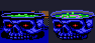
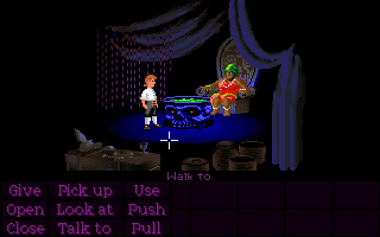
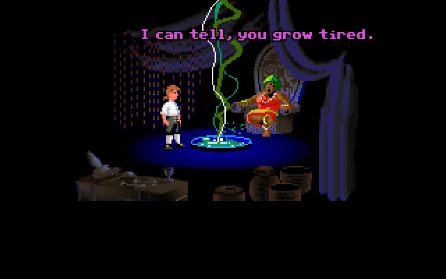
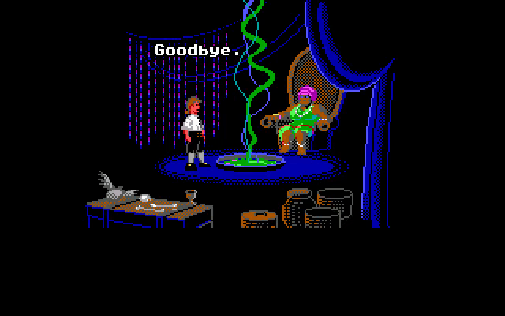
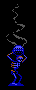
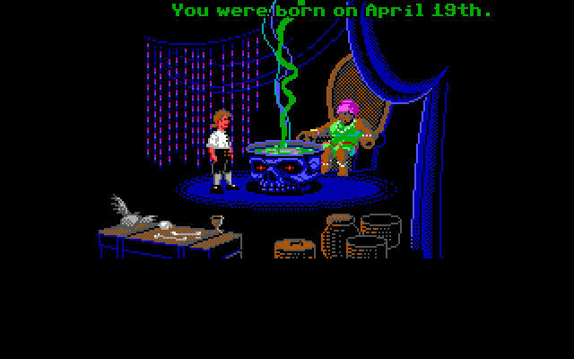
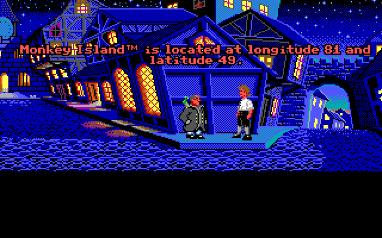
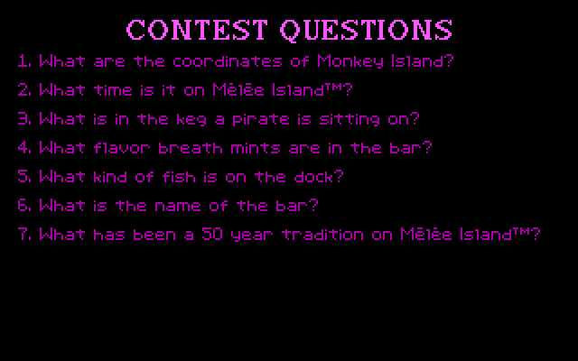

The cauldron in the Voodoo Shop is an actor, which means it's a special entity that can move freely around the screen and perform complex animations. However, the room also contains an unused version of the cauldron as an object instead of an actor. This means it can't move and can only be animated in very limited ways. It exists as EGA artwork in all three versions due to being unused.

It looks similar to the final cauldron, except less of the liquid within can be seen.
If enabled, it doesn't move or animate, and has no zplane (meaning Guybrush and the Voodoo Lady don't get clipped behind it). It's also tagged as "cauldron o' fear", and interacting with it causes Guybrush to say "I can't. I'm o'feared of it."

It's likely that the cauldron was supposed to be there at all times when this version was created, and was redone as an actor when the idea of it rising out of the floor came about.
Besides the cauldron, there are two more hotspots on the right side of the shop that can't normally be interacted with. One of them is the beads hanging from the ceiling, which are called "voodoo love beads", and the other is the Voodoo Lady herself, who is tagged as "fortune teller".
It's actually possible to mouse over both of them very briefly while the screen transitions to the left, though trying to interact with either will just re-trigger the Voodoo Lady's dialogue.

Interestingly, the same thing isn't possible in either of the demos, because the game waits until the screen is done scrolling before giving control back to the player, which feels cleaner to me.

In the demo, the Voodoo Shop contains an unused variation of the "Charles Atlas" statue, which uses darker colors and has smoke coming out of the orb that it's holding. Instead of being an object, it's drawn into the background itself, way off to the right beyond what the player can see.

I have no idea what the story behind this could have been. However, I think it's most likely just a random remnant from the process of drawing the background that accidentally got exported with the rest of the image, rather than anything exciting.
In the standalone demo, when talking to the Voodoo Lady, she'll try to guess your birthday. She'll start by randomly guessing months until you say yes to one of them, then she'll try to guess the day by playing a game of higher/lower with you until you tell her she guessed correctly.

Later, when talking to the Citizen of Mêlée, you'll get a chance to ask him for the location of Monkey Island. He'll respond by giving you coordinates (in "longitude/latitude" order, oddly). This appears unrelated, but the coordinates actually depend on the birthday you told the Voodoo Lady earlier! The game takes the month and day and plugs them into a slightly-confusing algorithm which spits out a set of coordinates.

The algorithm used to generate coordinates looks like this (in pseudocode):
longitude = (month +256 ) * day *4 while longitude >180 : longitude /=3 //divide longitude by 3 latitude = (day +391 ) *12 / monthwhile latitude >90 : latitude /=5 //divide latitude by 5
This means everyone gets their own personalized Monkey Island coordinates.
At the end of the demo, there are several questions which were part of a contest. You could mail your answers in to Lucasfilm Games for a chance to win various prizes.

One of the questions is "What are the coordinates of Monkey Island?". Because players were instructed to send their date of birth along with their answers, Lucasfilm could use it to verify their answer!
TODO add null island glitch